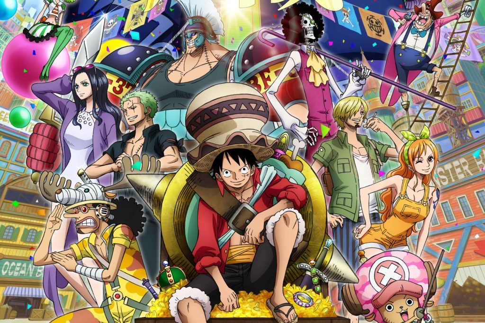

About Zoro
Roronoa Zoro also known as "Pirate Hunter" Zoro. He's a main combatant of the Straw Hat Pirates and one of their two sowrdsmen.He's one of the three most powerful combatants of the Strw Hat crew, alongside Luffy and Sanji.
Zoro is the second member of Luffy's crew and the first to join it.His dream is to become the greatest sowrdsman in the world in order to honor a promise made to his deceased childhood friend.
Zoro charasteristics
- Confident but often acts in a very comicals manner
- He has a terrible sense of direction (a running gag) but he never admits it when he gets lost
- He enjoys fighting a strongest oppenent
- He and Sanji has a great rivalry
- He can be found sleeping or training towards his goal
His friends
Straw Hat Crew